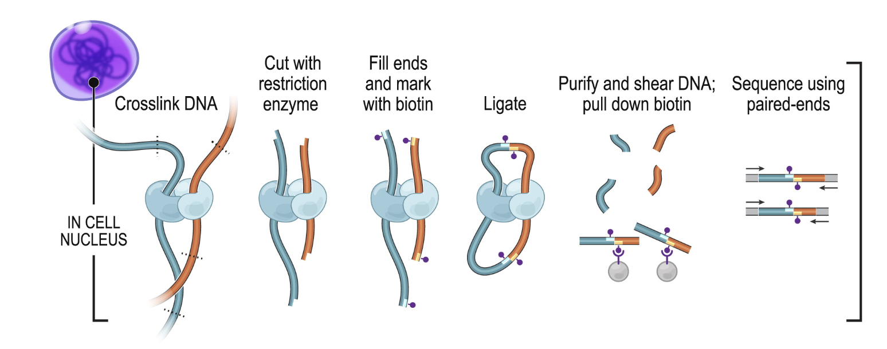

1 Hi-C principles
This section introduces the reader to general Hi-C experimental and computational considerations.
1.1 Experimental considerations
1.1.1 General procedure
The Hi-C procedure (Lieberman-Aiden et al. (2009)) stems from the clever combination of high-throughput sequencing and Chromatin Conformation Capture (3C) experimental approach (Dekker et al. (2002)).
In Hi-C, chromatin is crosslinked within intact nuclei and enzymatically digested (usually with one or several restriction enzymes, but Hi-C variants using MNase or DNase exist). End-repair introduces biotinylated dNTPs and is followed by religation, which generates chimeric DNA fragments consisting of genomic loci originally lying in spatial proximity, usually crosslinked to a shared protein complex. After religation, DNA fragments are sheared, biotin-containing fragments are pulled-down and converted into a sequencing library.

1.1.2 C variants
A number of C variants have been proposed since the publication of the original 3C method (reviewed by J. O. et al. (2017)), the main ones being Capture-C and ChIA-PET (see procedure below).
XXX
Capture-C is useful to quantify interactions between a set of regulatory elements of interest. ChIA-PET, on the other hand, can identify interactions mediated by a specific protein of interest.
1.1.3 Sequencing
Hi-C libraries are traditionally sequenced with short-read technology, and are by essence paired-end libraries. For this reason, the end result of the experimental side of the Hi-C consists of two fastq files, each one containing sequences for one extremity of the DNA fragments purified during Hi-C. These are the two files we need to move on to the computational side of Hi-C.
XXX
Fastq files are plain text files (usually compressed, with the .gz extension). They are generated by the sequencing machine during a sequencing run, and for Hi-C, necessarily come in pairs, generally called *_R1.fq.gz and *_R2.fq.gz.
Here is the first read listed in sample_R1.fq.gz file:
sample_R1.fq.gz
@SRR5399542.1.1 DH1DQQN1:393:H9GEWADXX:1:1101:1187:2211 length=24
CAACTTCAATACCAGCAGCAGCAA
+
CCCFFFFFHHHHHJJJJJIJJJJJAnd here is the first read listed in sample_R2.fq.gz file:
sample_R2.fq.gz
@SRR5399542.1.1 DH1DQQN1:393:H9GEWADXX:1:1101:1187:2211 length=24
GCTGTTGTTGTTGTTGTATTTGCA
+
@@@FFFFFFHHHHIJJIJJHIIEHThese two reads are the first listed in their respective file. Notice how they bear the same name (first line): they form a pair. The second line corresponds to the sequence read by the sequencer, the third line is a single + separator, and the last line indicates the per-base sequencing quality following a nebulous cypher.
1.2 In silico representation of Hi-C data
1.2.1 Processing workflow
XXX
1.2.2 Pairs
XXX
1.2.3 Binned contact matrices
XXX
1.2.3.1 .hic matrices
XXX
1.2.3.2 .(m)cool matrices
XXX